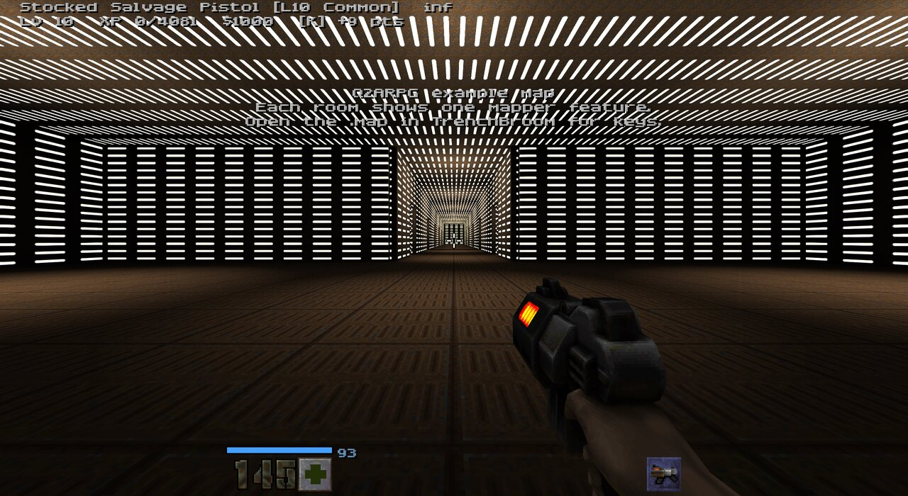
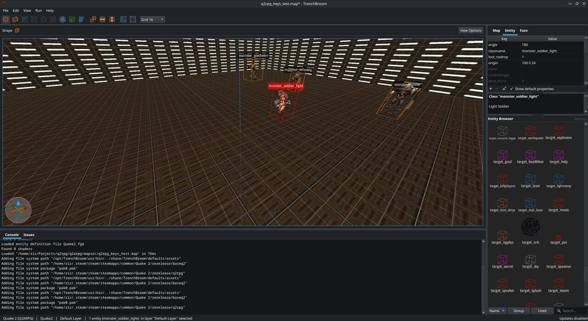
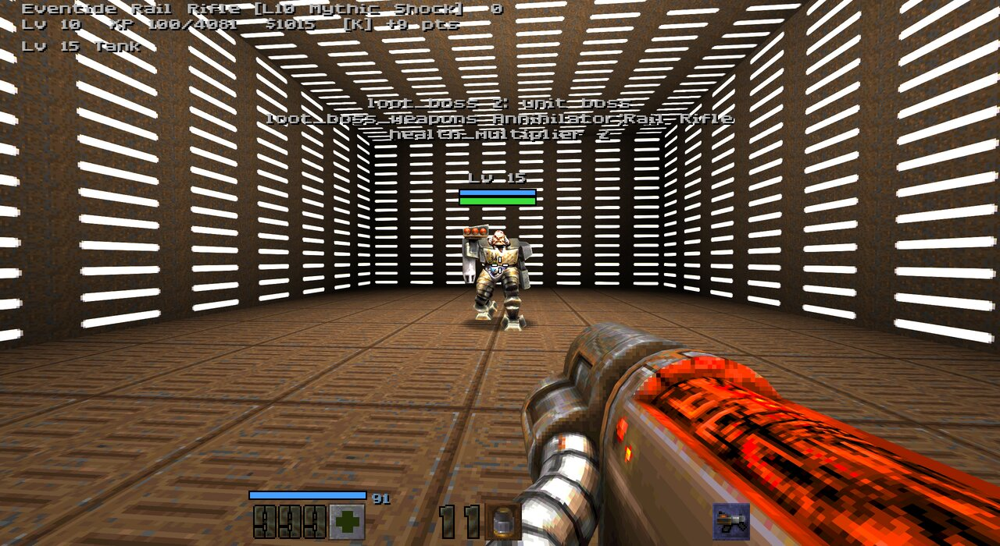
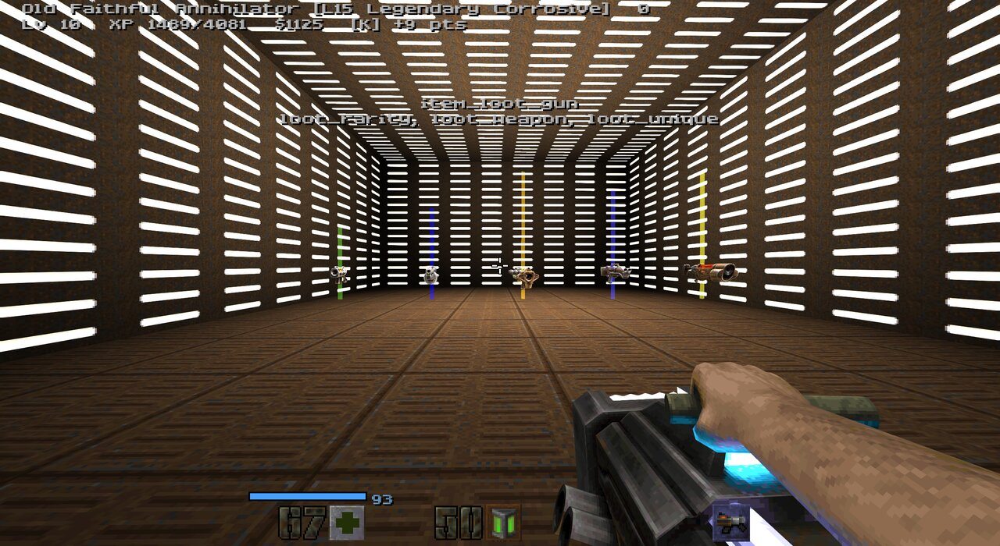

Custom maps and campaigns work out of the box: every monster gets a level, can roll as an Alpha, and drops XP, cash and loot. On top of that, mappers get keys and entities to tag bosses, place loot and tune each map, and a data file changes guns, makers, rarities and prices without touching C++.
q2rpg/fgd folder has a TrenchBroom game config.map q2rpg_example. Each room shows one feature and tells you which key does it.q2rpg/fgd/q2rpg_example.map in TrenchBroom to see the keys on every entity..bsp in q2rpg/maps/ and run map yourmap.

Add these to any monster_* entity.
| Key | Effect |
|---|---|
loot_elite | 1 always an Alpha, 2 always an Alpha Omega. Elites are bigger, tougher and drop better loot. |
loot_boss | 1 mini-boss, 2 unit boss: boss levels, cash, XP and loot. Pair it with the stock health_multiplier. |
loot_boss_weapons | The boss's signature gun, e.g. Rail Rifle;Rocket Launcher. |
loot_nodrop | 1: no XP, cash, loot or challenge credit. Works on a target_spawner too, for endless fodder. |

loot_boss
All loot rolls at the party's level when it appears.
| Entity | What it does |
|---|---|
item_loot_gun | A gun in the map. Keys: loot_rarity (0 Common to 5 Mythic), loot_weapon (e.g. Rocket Launcher), loot_unique. |
item_loot_shield | A shield. Key: loot_rarity. |
item_loot_grenade | A grenade mod. Keys: loot_rarity, loot_grenade (Frag, Cluster, Sticky, Vortex, Leech, Hopper, Airburst). |
target_loot_drop | Drops a gun each time it's triggered: buttons, secrets, puzzle rewards. |
target_ngplus | Ends the campaign like beating the final boss, then starts New Game+. |
Set these on worldspawn.
| Key | Effect |
|---|---|
loot_start_level | Players below this level are raised to it; monsters and loot roll at it too. |
loot_level_bonus | Monsters are N levels higher (hard maps, secret levels). |
loot_droprate | Drop multiplier: 2 double, 0 none. |
loot_elite_chance | Alpha chance multiplier: 3 triple, 0 none. |
loot_modifier | Force a map modifier, like Gold Rush, in any game. |
loot_nomodifier | No New Game+ modifier on this map. |
loot_novendor | Close the vendor (good for boss arenas). |
Copy q2rpg/loot_data.example.json to loot_data.json and change what you like. Anything left out keeps its built-in value. The console reports what changed and any typos when a map starts.
| Section | What you can change |
|---|---|
guns | Name, magazine, reload, how often it drops, lowest rarity. |
makers | Names and how each maker's parts shift recoil, handling, damage, spread, pellets, fire rate, magazine, reload and crits. |
rarities | Names, damage bonus, how often each drops. |
prices | The vendor's price formula, elemental markup and sell share. |
{
"guns": { "Shotgun": { "drop_weight": 32 } },
"rarities": { "Legendary": { "damage": 1.8 } },
"prices": { "base": 15, "per_level": 6 }
}fgd files to ~/.TrenchBroom/games/Quake2-Q2ARPG/ (Linux) or %AppData%\TrenchBroom\games\Quake2-Q2ARPG\ (Windows).rerelease folder.Any Quake 2 compiler works. With ericw-tools 2.0, keep the .map in a folder named maps:
qbsp -q2bsp -basedir "<game>/rerelease" -gamedir baseq2 maps/mymap.map
vis maps/mymap.bsp
light -basedir "<game>/rerelease" -gamedir baseq2 maps/mymap.bspAsk in Discussions or open an issue. Built something? Post it in Show and tell.